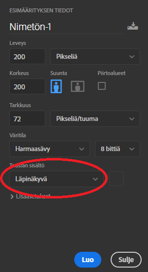
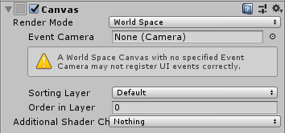
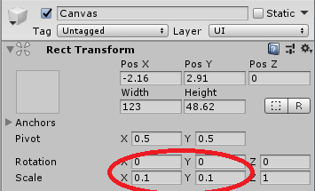

Harjoitus: RPG
Yleistä
- Tarkoitus on laatia yksinkertainen 2d roolipeli. Pelin maailma voi olla ulkoilmassa tai esimerkiksi linnan tai luolan sisällä. Pelisi voi aivan hyvin sijoittua myös avaruuteen tai vaikka meren pohjalle.
- Hahmon suunnittelu
- Pelimaailman "tiilien" laatiminen
- Vihollisen suunnittelu
- Hahmon liikuttaminen
- Törmääminen (BoxController, TileCollider, RigidBody)
- Hahmon ominaisuudet: voima, nopeus, ketteryys
- Taisteleminen ja lukujen arpominen
Kansiot
- Laadi järkevä kansiorakenne Assets-kansion alle
- Mieti mitä kaikkea peliin tarvitaan?
Pelihahmo
- Piirrä pelihahmo ja tuo se projektiisi. Pelihahmolla kannattaa olla läpinäkyvä tausta.
- Tee pelihahmosta Prefab.
PhotoShop, tee uusi kuva jonka koko esimerkiksi 200px x 200 px, valitse taustan väriksi läpinäkyvä 
Pelimaailma
- Laadi pelin maailmalle ulkoasu. Mieti mitä osasia maailmasi vaatisi. Voit tehdä esimerkiksi
- Nurmi
- Puu (este)
- Vuori (este)
- Joki / meri (este)
- Tutki miten Ruby's 2D RPG:ssä Tilemap-tapahtuikaan (World Design: Tilemaps).
- Tutki miten maastolle määriteltiin törmäys (World Interactions: Blocking Movement).
Animaatio hahmolle (*)
- Laadi hahmolle animaatio. Tässä kannattaa pyrkiä noudattamaan Ruby's 2D -tutoriaalin mallia (kohta Sprite Animation).
- Piirrä aluksi hahmolle muutamia kuvia jotka kuvaavat kävelemistä eri suuntaan.
Animation
Controller
Cinemachine
- Asenna Cinemachine ja palauta mieleen kuinka kamera liikkuu hahmon mukana.(Camera - Cinemachine)
Vihollinen
- Piirrä vihollinen ja tuo se projektiisi. Myös vihollisella kannattaa olla läpinäkyvä tausta.
- Tee vihollisesta Prefab.
- Lisää viholliselle myös BoxCollider 2D ja RigidBody 2D.
Ominaisuudet
- Tarkoitus on lisätä hahmolle ja vastustajalle ominaisuuksia.
- Voima vaikuttaa lyönnin kovuuteen, ketteryys siihen osuuko isku ja elinvoima kestävyyteen.
- Esittele kolme muuttujaa ja arvo niihin Start()-metodissa järkevät arvot.
voima = Random.Range(0, 10) + 10; Debug.Log("Voima = " + voima); - Lisää uusi Text-objekti Hieararchy-ikkunaan (ilmestyy Canvas ja Text)
- Canvas Render Mode: World Space

- Canvas Scale vaatii säätämistä jotta koko sopiva

- Lisää skriptissä pelihahmolle julkinen Text-muuttuja
public Text txtInfo;
Lisää alkuunusing UnityEngine.UI;
- Raahaa Text-objekti Hierarchy-ikkunasta pelihahmon julkiseen muuttujaan.
- Koodissa voit asettaa muuttujat nyt näkyviin kun arvot muuttuvat.
txtInfo.text = "str:" + strength;
Tietojen näyttäminen pelaajalle
Hahmon tiedot olisi hyvä näyttää pelaajalle jollain tapaa. Yksinkertaisinta olisi käyttää Text-objektia.
Taisteleminen
- Tarkoitus on saada pelissä arvottua hahmon ja vastustajan törmätessä lyönti
- Törmätessä hahmo lyö vastustajaa ja vastustaja hahmoa, arvotaan tulos johon vaikuttaa molempien ominaisuudet. Vähennetään elinvoimaa tarvittaessa.
- Arvotaan luku, tarkistetaan onko luku suurempi kuin vastustajan ketteryys: jos on niin osuu, jos ei niin ei osu
- Jos isku osuu niin vahinko arvosaan luku esimerkiksi nolla - voimakkuus. Tämän jälkeen vähennetään elinvoimaa.
Miten käytännössä menisi? Tarvitaan julkisia (public) funktioita joiden avulla tarkistetaan ja asetetaan arvoja.
// kertoo onko olento elossa
public bool isAlive() {
if (hp > 0) return true;
else return false;
}
Voit tehdä aliohjelman arvojen muuttamista varten:
public void changeHP (int value) {
hp = hp + value;
Debug.Log("new hp" + hp);
}
Tiedon välittäminen tapahtuu gettereillä ja settereillä:
public int getStrength() {
return strength;
}
Hahmolla voisi olla taistelu esimerkiksi seuraavaan tapaan OnTriggerEnger2D-metodissa:
void OnTriggerEnter2D(Collider2D other)
{
VihuController vihu = other.GetComponent<VihuController>();
if (vihu != null)
{
// onko vihu elossa?
if (vihu.isAlive())
{
// arvotaan hyökkäys (0-5 + hahmon voima)
int attack = Random.Range(0, 5) + strength;
// osuuko hyökkäys? jos yli vihun dex niin osuu
if (vihu.getDexterity() < attack)
{
// osui nyt, vähennetään vihun elinvoimaa
}
}
}
}